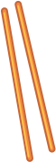
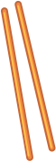
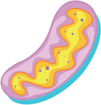
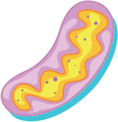

Membrana plasmática- Envoltório celular responsável pela entrada e saída de moléculas do citoplasma.
Retículo endoplasmático- Trata-se de um complexo e extenso sistema interconectado de membranas, contínuo ao envoltório nuclear, podendo se estender por toda a célula. Esse sistema está disposto de maneira a se dobrar diversas vezes formando algo semelhante a canais e ou sacos que são denominados cisternas. Sua função está relacionada ao processamento e transporte de moléculas.
Núcleo- Local onde encontra o material genético – DNA
Mitocôndria- Responsáveis pela respiração celular e produção de energia
Complexo de Golgi- Organela responsável com as funções de armazenamento e empacotamento de substâncias que são produzidas na síntese celular
Lisossomo- Organela responsável pela digestão de moléculas
Centríolos- São estruturas ocas, constituídas por nove conjuntos de três microtúbulos unidos por proteínas adesivas, estando localizados em uma região da célula denominada centrossomo ou centro celular. Auxiliam na separação do material genético na divisão celular e podem formar cílios e flagelos.
Microtúbulos- Sua função básica é a manutenção da organização celular, tanto em sua forma quanto em seu conteúdo. Possibilita o movimento circular do citoplasma atuando no processo de transporte de substâncias e permite a união das células.


 



 
